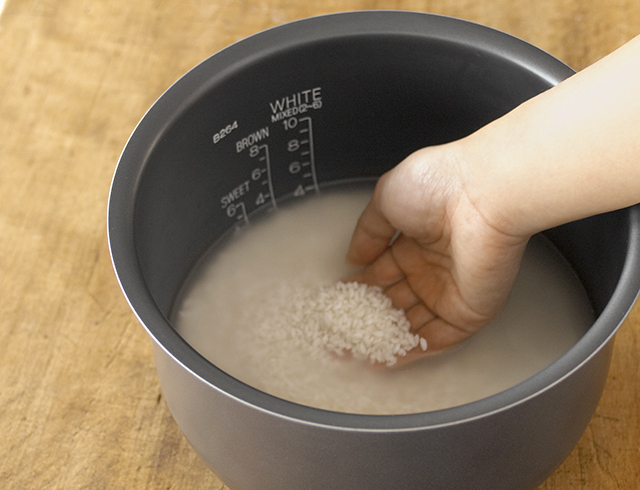
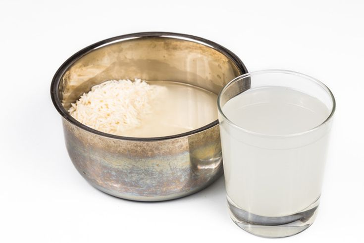
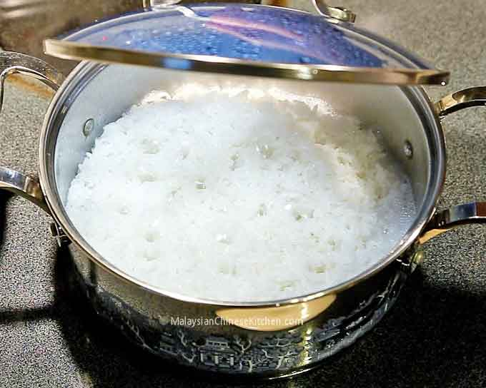

How to cook rice
1. Take 2 cups of rice and rinse in warm water
2. Keep washing until the water is clear
* If the water looks like this, keep rinsing.

here is an article on why you should wash your rice:
why you should be washing your rice
3. once the rice is completely washed, add about 2 cups of water. it shoudld look like this:

4. cook it on the stove for about 8 minutes until the water is gone. it should look like this:

5. then, add a lid on top and cook for eight more minutes on low heat. here is why you should do that:
why you should add a lid to your rice when cooking it
6. Take the lid off and enjoy!